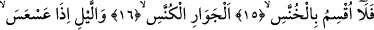
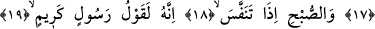
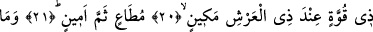
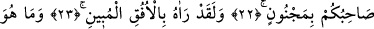
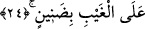

ARKADAŞINIZ (MUHAMMED) DE
MECNUN DEĞİLDİR
15. Hayır! Akıp giden,
16. Bir kaybolup bir etrafı aydınlatan yıldızlara andolsun,
17. Kararmaya yüz tuttuğunda geceye andolsun,
18. Ağarmaya başladığında sabaha andolsun ki,
19-20. O (Kur’an), şüphesiz değerli, güçlü ve Arş’ın sâhibi (Allah’ın) katında
itibarlı bir elçinin (Cebrâil’in) getirdiği sözdür.
21. O orada sayılan, güvenilen (bir elçi) dir.
22. Arkadaşınız (Muhammed) de mecnun değildir.
23. Andolsun ki, onu (Cebrâil’i) apaçık ufukta görmüştür.
24. O, gaybın bilgilerini (sizden) esirgemez.
Âyette yer alan “felâ uksimu” ifâdesindeki “lâ” sıla olup, daha önce geçen bir söz
dolayısıyla getirilmiştir. O sözü takdir ederek âyeti şu şekilde anlayabiliriz: Ey kâfirler!
Durum; sizin iddiâ ettiğiniz gibi Kur’an bir büyü, şiir ya da efsane değildir. İşte bu gizli
cümlenin ardından Allah okuduğumuz âyette gündüz kaybolup geceleri gözüken
gezegenlere andolsun, diyor.
“el-Hunnes”, “hânis” kelimesinin çoğuludur. Hânis geri kalan demektir. Kelime
“hanise’r-reculu ‘ani’l-kavmi hunûsen/adam kendi kavminden geriye kaldı” tâbirinden
türemedir.
“el-Hunûs” kökünün asıl anlamı “geriye dönmek” demektir. “el-Hannâs” şeytanın adı
olup bu kökten türemedir. Şeytana “hannâs” denmesi, hortumunu kulun kalbine
yerleştirmesinden, kul Allah’ı zikredince gerisin geriye dönmesinden, kul Allah’tan
gafil olunca onun kalbine geri dönüp vesvese vermeye başlamasından dolayıdır.